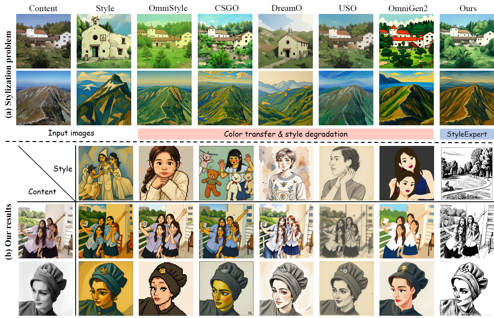
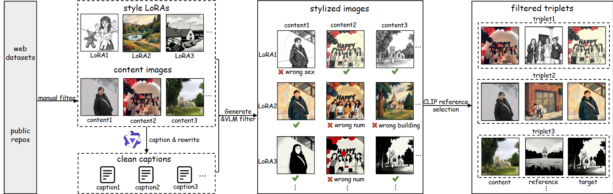

StyleExpert: Mixture of Style Experts for Diverse Image Stylization

Diffusion-based stylization has advanced significantly, yet existing methods are limited to color-driven transformations, neglecting complex semantics and material details. We introduce StyleExpert, a semantic-aware framework based on Mixture of Experts (MoE). Our framework employs a unified style encoder, trained on our large-scale dataset of content-style-stylized triplets, to embed diverse styles into a consistent latent space. This embedding is then used to condition a similarity-aware gating mechanism, which dynamically routes styles to specialized experts within the MoE architecture. Leveraging this MoE architecture, our method adeptly handles diverse styles spanning multiple semantic levels, from shallow textures to deep semantics. Extensive experiments show that StyleExpert outperforms existing approaches in preserving semantics and material details, while generalizing to unseen styles.

Overview of the proposed StyleExpert. Our method comprises two training stages. First, a style encoder is trained with the InfoNCE loss to learn discriminative style representations for faster convergence. Second, the pre-trained encoder provides style priors to guide the router network in training MoE LoRA adapters, enabling each layer to dynamically select the most suitable experts for diverse styles.
Data Generation Pipeline:
